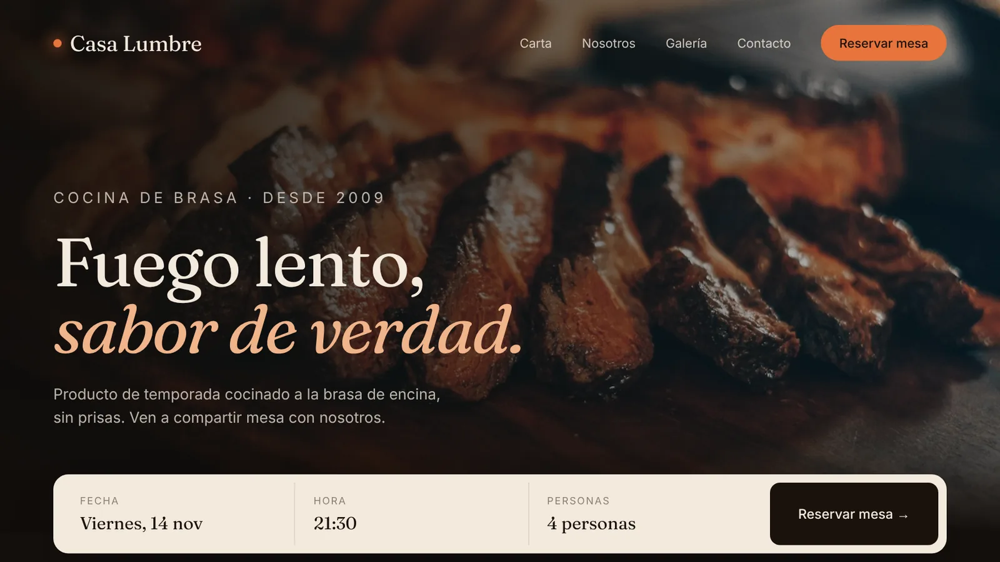

Ejemplo 01Restaurante
Casa
Lumbre
Web con reservas
Diseño de muestra
Platos a la brasa, carta y reserva de mesa en tres clics. Una web oscura y cálida, como el propio local.
Quiero algo asíProyectos
Webs, cartas digitales y tiendas online hechas a medida. Cada proyecto tiene su propia personalidad, igual que cada negocio.
01/ 06